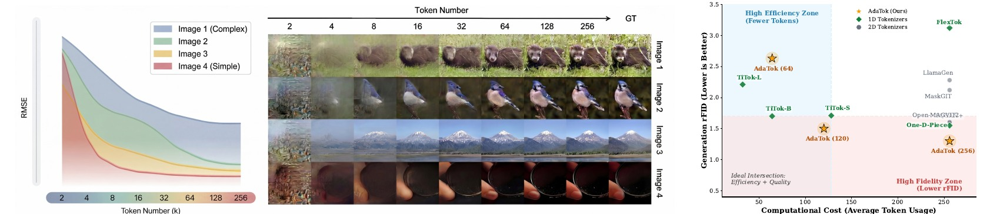
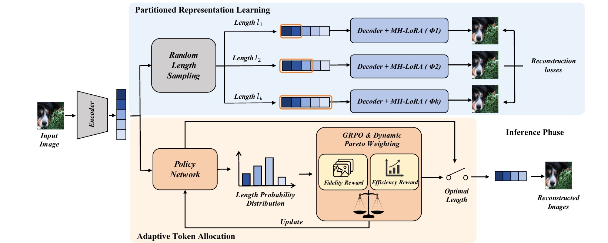
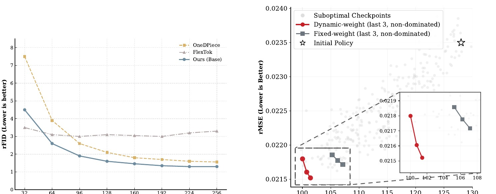

Image tokenizers, whether 2D-grid or 1D, share a common assumption: every image is represented by the same fixed number of tokens, regardless of its visual complexity. Image content, however, is highly heterogeneous, and a uniform budget overspends on simple scenes while underserving complex ones. We ask whether a discrete tokenizer can budget itself: decide, in one pass and without external guidance, how many visual tokens an input needs. We answer with AdaTok, a representation-allocation co-design that turns elastic reconstruction into self-budgeted discrete tokenization rather than leaving length as a deployment-time hyperparameter. AdaTok has two components: (1) Prioritized Representation Learning (PRL) imposes a coarse-to-fine ordering via nested tail masking and equips the decoder with budget-specific Multi-Head LoRA heads, resolving the semantic shift that arises when the same prefix must serve different budget regimes; (2) Adaptive Token Allocation (ATA) trains a lightweight deterministic-group GRPO policy over the candidate budget set in a single forward pass, while Dynamic Pareto Weighting balances fidelity against budget. On ImageNet-1K, AdaTok attains rFID 1.50 at an average of ~118 tokens per image, the strongest reconstruction among the discrete 1D tokenizer baselines we compare against, and delivers ~2.1x throughput in autoregressive image generation.
AdaTok: Self-Budgeting Image Tokenization with Quality-Preserving Dynamic Tokens
1The Hong Kong University of Science and Technology

Abstract
Highlights
Method
Prioritized Representation Learning
Nested Tail Masking forces early 1D tokens to carry stable semantic structure and later tokens to add reconstruction detail, making prefixes usable at multiple budgets.
Budget-Specific MH-LoRA
Each candidate budget activates a lightweight decoder LoRA head, reducing the semantic shift that appears when the same prefix is decoded under different length regimes.
Adaptive Token Allocation
A deterministic-group GRPO policy evaluates candidate budgets as a group for each image, then selects a token count in one forward pass without search or external guidance.

Main Results
| Tokenizer | #Params | #Codebook | #Tokens | Elastic | rFID ↓ | PSNR ↑ | Generator | gFID ↓ |
|---|---|---|---|---|---|---|---|---|
| Fixed-budget baselines | ||||||||
| VQGAN | 85M | 1024 | 256 | No | 7.94 | 19.4 | LDM-8 | 15.78 |
| MaskGIT | 227M | 1024 | 256 | No | 2.12 | - | MaskGIT | 6.18 |
| LlamaGen | 72M | 16384 | 256 | No | 2.28 | 20.79 | LlamaGen | 3.06 |
| ImageFolder | 362M | 4096 | 286 | No | 0.80 | - | VAR-d16 | 2.60 |
| VAR | 310M | 4096 | 680 | No | 0.90 | - | VAR-d16 | 3.30 |
| TiTok-S | 83M | 4096 | 128 | No | 1.71 | 17.80 | MaskGIT | 1.97 |
| TiTok-B | 204M | 4096 | 64 | No | 1.70 | 17.13 | MaskGIT | 2.48 |
| TiTok-L | 641M | 4096 | 32 | No | 2.21 | 15.96 | MaskGIT | 2.77 |
| Continuous-token adaptive baselines | ||||||||
| CAT | 187M | - | - | Yes | 0.46 | - | - | - |
| Semanticist | - | - | 256 | Yes | 0.72 | - | LlamaGen | 2.57 |
| Discrete-token elastic baselines | ||||||||
| FlexTok | 341M | 64000 | 32 | Yes | 4.20 | - | FlexTok | 3.83 |
| ALIT | - | 4096 | 256 | Yes | 8.25 | - | - | - |
| One-D-Piece | 83M | 4096 | 256 | Yes | 1.55 | 18.28 | MaskGIT | 2.67 |
| AdaTok-Full | 97M | 4096 | 256 | Yes | 1.31 | 18.42 | MaskGIT | 2.28 |
| AdaTok-Adaptive | 97M | 4096 | 118 avg. | Yes | 1.50 | 17.78 | - | - |
AdaTok-Full shows the capacity ceiling of PRL at 256 tokens. AdaTok-Adaptive uses the ATA policy to choose the per-image budget, reaching rFID 1.50 at an average of 118 tokens.
Elasticity and Policy Learning

Elastic reconstruction
At matched budgets, AdaTok leads the 96-256 region against similarly sized discrete elastic tokenizers and exposes a continuous rate-distortion control knob without retraining.
One-pass allocation
The allocation policy does not run iterative search. It compares the candidate budget set for the same image and uses group-relative advantages to remove image-difficulty bias.
Ablation Study
| Case | NM | MH-LoRA | Policy | rFID ↓ | Tokens |
|---|---|---|---|---|---|
| PRL module study | |||||
| (a) | No | No | Fixed | 1.71 | 128 |
| (b) | Yes | No | Fixed | 2.04 | 128 |
| (c) | Yes | Yes | Fixed | 1.63 | 128 |
| Policy study | |||||
| (d) | Yes | Yes | Heuristic | 2.32 | 155.3 |
| (e) | Yes | Yes | GRPO | 1.58 | 123 |
| (f) | Yes | Yes | GRPO+DPW | 1.50 | 118 |
NM alone hurts because a static decoder cannot interpret the same prefix at different semantic scales. MH-LoRA recovers the fixed-128 setting, and GRPO+DPW further improves both quality and average length.
Matched-Budget Reconstruction
| Tokens | rFID ↓ | PSNR ↑ | SSIM ↑ | LPIPS ↓ |
|---|---|---|---|---|
| 32 | 4.60 | 16.48 | 0.366 | 0.330 |
| 64 | 2.64 | 17.27 | 0.395 | 0.262 |
| 128 | 1.63 | 17.92 | 0.421 | 0.216 |
| 256 | 1.31 | 18.42 | 0.434 | 0.196 |
All four metrics improve monotonically with budget. Adaptive mode reaches rFID 1.50 using fewer tokens on average than the fixed-128 decoder, showing that the learned allocator can spend tokens unevenly across images.
Policy and AR Generation
| Strategy | HV ↑ | H(pi) ↑ | rMSE ↓ | Tok. |
|---|---|---|---|---|
| Fixed (128) | 226 | 0.00 | 0.0219 | 128.0 |
| REINFORCE | 182 | 0.08 | 0.0263 | 36.8 |
| PPO | 419 | 0.00 | 0.0197 | 224 |
| GRPO | 1342 | 0.28 | 0.0232 | 118 |
| Tok. | Speedup ↑ | Delta gFID ↓ | gFID |
|---|---|---|---|
| 32 | 8x | +2.60 | 15.07 |
| 64 | 4x | +0.97 | 13.44 |
| 128 | 2x | -0.34 | 12.13 |
| 256 | 1x | 0 (ref.) | 12.47 |
GRPO provides the best hypervolume among policy baselines without an auxiliary critic. In matched-compute AR generation, shorter AdaTok sequences expose a throughput-quality trade-off; 128 tokens improves over the 256-token decode while halving sequence length.
Experimental Setup
Data and Evaluation
- Dataset: ImageNet-1K at 256x256 resolution.
- Reconstruction metrics: rFID, PSNR, SSIM, and LPIPS on the standard 50K validation split.
- Generation metric: gFID on 50K class-conditional samples following the ADM protocol.
- Candidate budgets: {32, 64, 96, 128, 160, 192, 224, 256}.
Architecture and Training
- Backbone: TiTok-S-style ViT encoder and decoder, 8 layers, dmodel=512, 8 attention heads.
- Codebook: 4096 entries with latent dimension 12.
- PRL: 200 epochs with AdamW, lr 1e-4, weight decay 0.05, batch size 256.
- ATA: frozen tokenizer plus 10K GRPO steps; policy is a 3-layer GeLU MLP.
BibTeX
@article{lu2026adatok,
title={AdaTok: Self-Budgeting Image Tokenization with Quality-Preserving Dynamic Tokens},
author={Lu, Xiaocheng and Chen, Yuxi and ZHANG, Jie and Lin, Jian and Zhu, Fangqi and Han, Tao and Guo, Song},
year={2026},
note={Manuscript}
}